Nacido en Ashford, Kent, Inglaterra el 20 de noviembre de 1986, es un vocalista, músico y compositor británico con nacionalidad brasileña conocido por ser el líder vocalista de la banda Bring Me The Horizon y fundador de la línea de ropa Drop Dead Clothing. A temprana edad, aproximadamente por tres años vivio en Australia con sus padres, Ian y Carol Sykes. A sus 8 años de edad se traslado de nuevo al Reino Unido, asistiendo en su adolescencia al instituto Stocksbridge. Sykes siempre se intereso por el arte y la música, esta de más decir que eran sus asignaturas preferidas en su época escolar. Mientras estaba en la escuela, comenzo a diseñar compilaciones de CD y pistas cortas bajo el nombre de Quakebeat. También tocó en otras bandas, incluyendo la banda de hip-hop Womb 2 Da Tomb con su compañero de actual, Matt Nicholls, y su hermano Tom Sykes, y la banda de death metal técnico Purple Curt como baterista y vocalista con Süssmayer Neil Whiteley, bajo el seudónimo de "Olisaurus", que más tarde usaría para lanzar canciones en solitario. 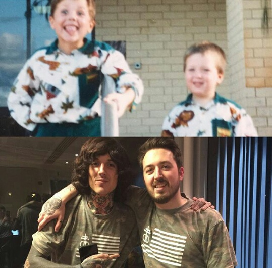 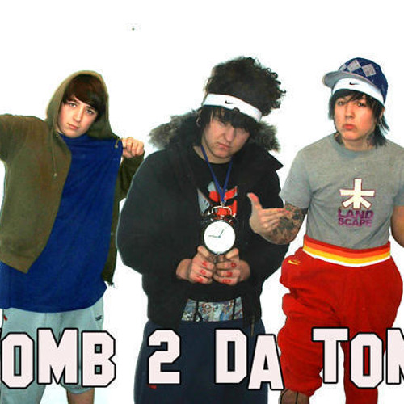
En el documental de Bring Me The Horizon de la BBC Radio 1, Sykes cuenta que su primera experiencia en el escenario fue cuando vio a una de sus bandas favoritas, Funeral For A Friend, en un concierto en Leeds, donde se ofreció como voluntario para cantar una canción entera en el escenario. Se convirtió en vegetariano en 2003 después de ver un documental sobre la crueldad con los animales en línea. Al ver el documental de la página web de Peta, Sykes dijo: «Cuando vi cómo se tortura a los animales en las granjas, no podía justificar ser parte de esa crueldad». Más tarde, Sykes se convirtió en uno de los rostros de PETA e incluso diseñó camisetas con el lema "La carne da asco" mediante su línea de ropa Drop Dead. Finalmente, se volvió vegano después de leer un libro a mediados del 2013. 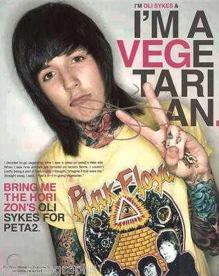
Desde la edad de 12 años, sufre de terrores nocturnos en los que una vieja mujer acude a él en sus sueños y lo ataca, por lo que fue medicado cierto tiempo. Durante el Festival de Leeds en 2013, Sykes contó que tenía un historial de abuso y adicción a las drogas. Hablando con el público, dijo: "Recibimos muchas cartas de vosotros, lo que es impresionante. Un montón de gente ha dicho que les hemos salvado la vida. No sé mucho de eso, pero quiero que sepáis que me salvasteis la vida. Hace un par de años era un adicto a las drogas sin valor. Casi me muero. Si no fuera por vosotros, estaría muerto, así que desde el fondo de mi corazón os doy las gracias". Más allá de un largo historial amoros, el 12 de julio de 2015, se casó con la modelo y tatuadora Hannah Snowdon en una ceremonia privada, con quien tuvo años de un matrimonio muy complicado, causando su divorcio el 28 de mayo de 2016. Eso no le permitió volver a creer en el amor, ya que actualmente esta casado con la modelo brasileña, Alissa Salls desde el 2017. 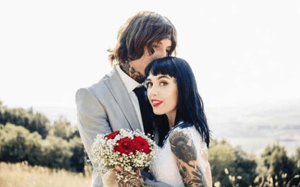 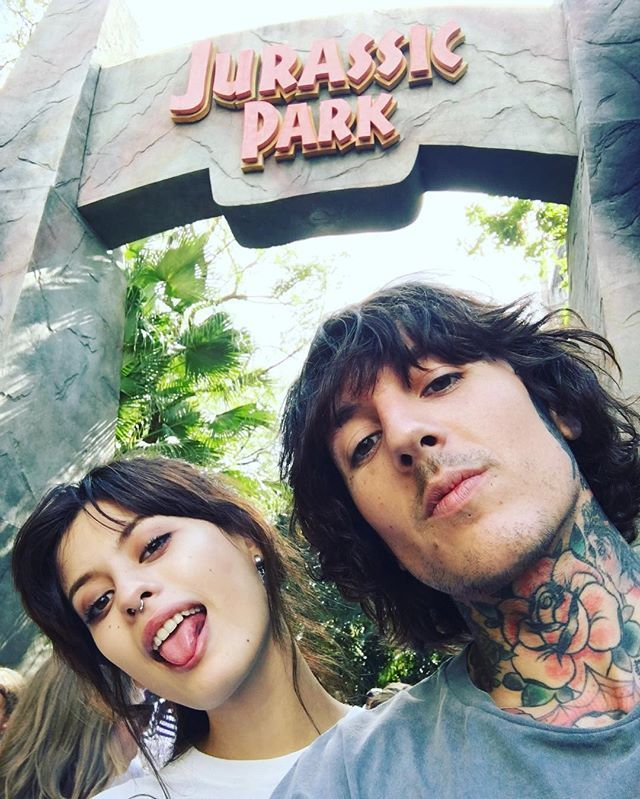
Es un baterísta brítanico, nacido el 22 de marzo en 1986 en la ciudad de Maltby, Yorkshire del Sur, Inglaterra. Formo la banda Bring Me The Horizon en 2002 junto con Sykes y Malia, con quienes compartían gustos musicales. Matt tenía gustos por el metal sueco lo cual le sirvió como inspiración en el primer álbum, tras invitar de bajista a Matt Kean, quien era integrante de otras bandas locales, la formación quedó como lo es actualmente, sin contar a Fish. En sus primeros álbumes, Matt era reconocido por el manejo del doble pedal y su virtuosismo con la batería antes del drástico cambio de género. 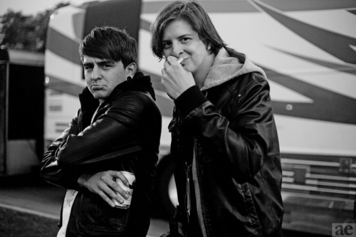 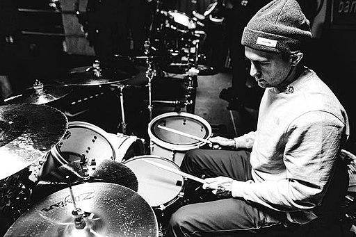
Matt es de padres divorciados, su padre le compró su primera batería cuando era adolescente (la cual le costo 16 años en dominarla) porque se sentía culpable después de dejar a su familia. 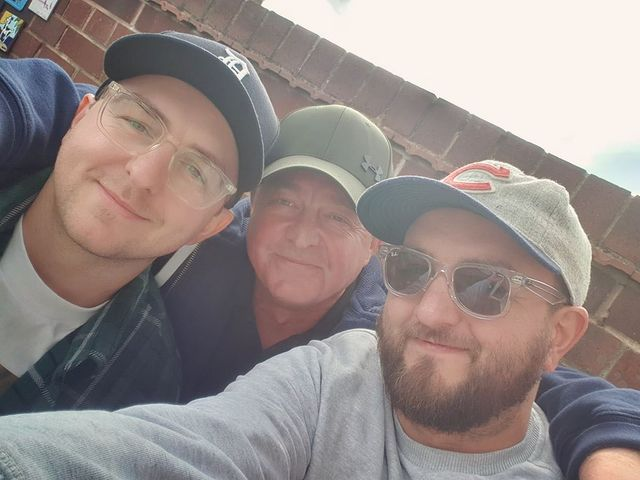
Matt ha esto en 4 relaciones; la primera fue con Stephanie Falkiner en 2004, Nat Davies en 2009, Maudi Evitt en 2011. Y finalmente desde el 2012 hasta la actualidad se encuentra casado con Chloe Mellors. 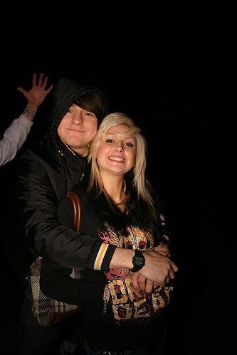 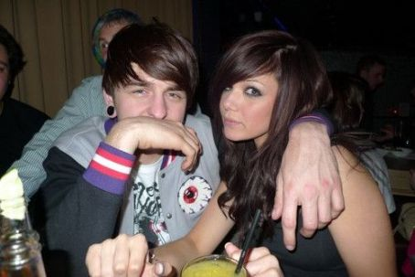 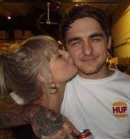 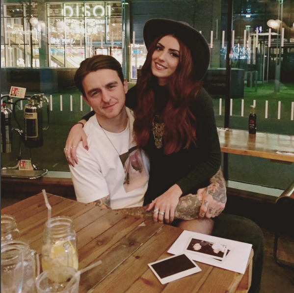
Nacido el 4 de junio de 1987, en Sheffield, Inglaterra, es el guitarrista principal de Bring Me The Horizon. Su habilidad se remonta a los años de su niñez, siendo pupilo de su maestro Frank White, siendo su primera guitarra fue una Jackson. 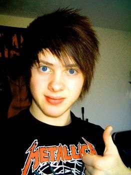
Además, Lee, tiene una Les Paul Custom perteneciente a la marca Gibson. 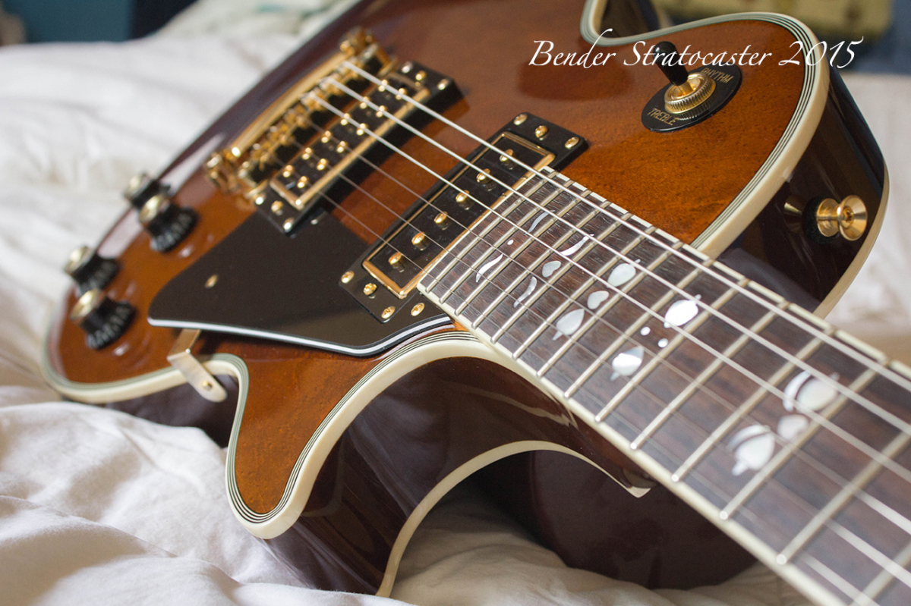
Actulamente, esta felizmente casado con Deni Marie McGonigle. 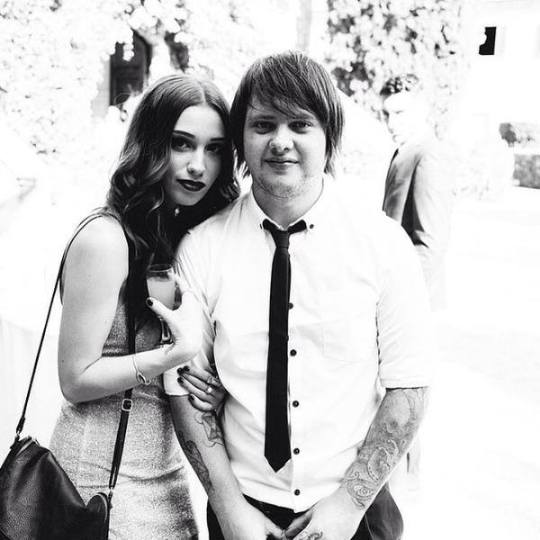
Es un músico británico especializado en el instrumento "Bajo", nacido en Sheffield, Inglaterra, 2 de junio de 1986. 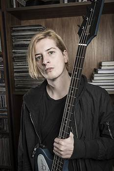
Empezó tocando guitarra aunque cuando entró a la escuela secundaría empezó a tocar el bajo. Cuando Matt entró a la preparatoría conoció a Oliver, después de hacerse amigos decidieron crear la banda, juntó con el guitarrista Lee Malia y el baterista Matt Nicholls.
No hay mucho de su vida privada, solamente que se conoce que tiene una relación sentimental con la cantante tiLLie. 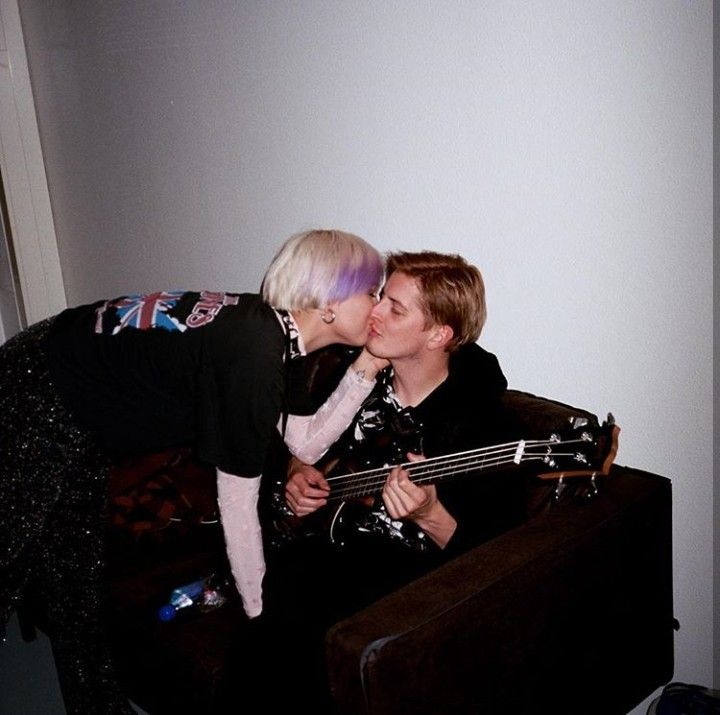
Nacido en Inglaterra, el 26 de junio de 1986, Jordan Fish es el tecladista y vocalista de fondo, de la banda británica. Fue nominado al premio como mejor tecladista en la encuesta de lectores de Alternative Press 2013. 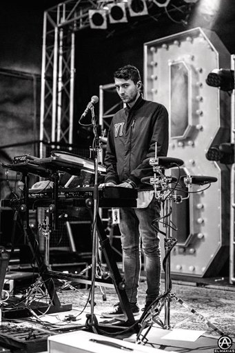
Antes de BMTH había sido tecladista de una banda llamada Worship, tiempo después ayudó a BMTH como un integrante temporal, hasta que se unió oficialmente en enero de 2013. El guitarrista Lee Malia dice que la influencia de Jordan en Sempiternal lo ayudó a estar más inspirado a la hora de escribir riffs. 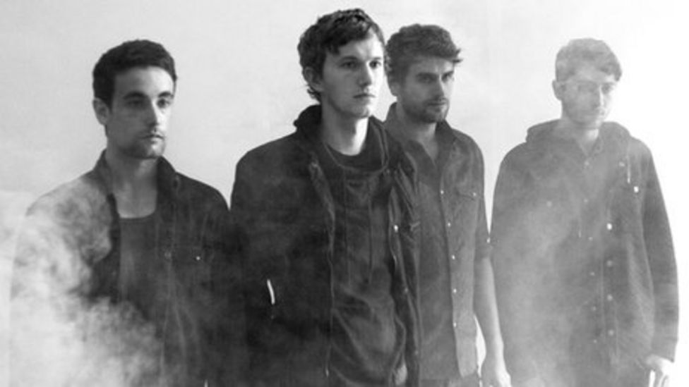
En cuanto a su vida personal, se casó con Emma Fish y dieron la bienvenida a un hijo llamado Eliot George Fish en 2016. El 4 de febrero, dio a conocer el nacimiento de su segunda hija llamada Eden Aria Elizabeth Fish, nacida el 31 de enero en 2019. 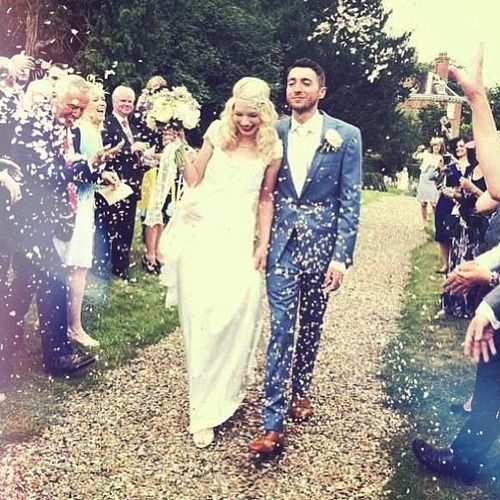 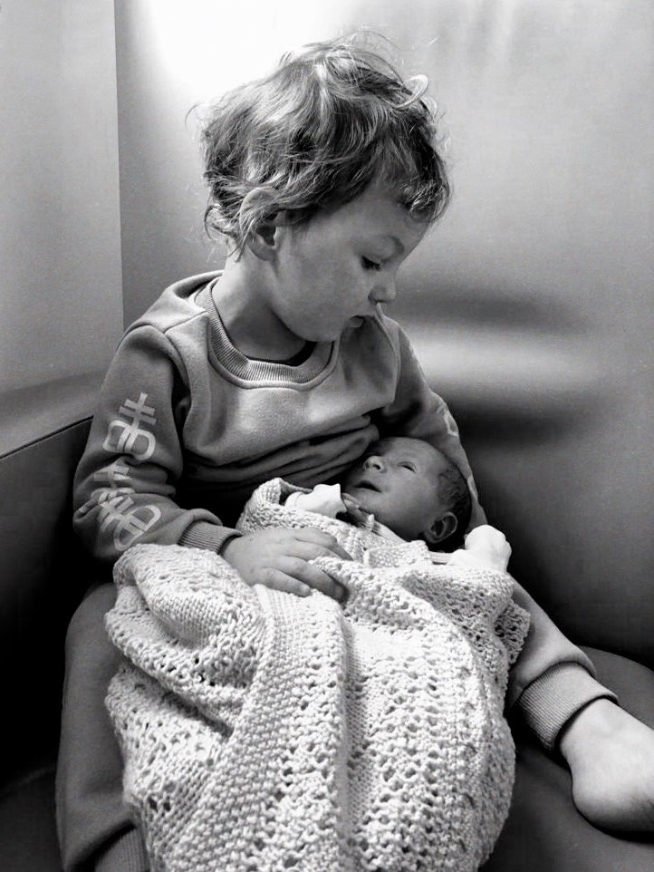